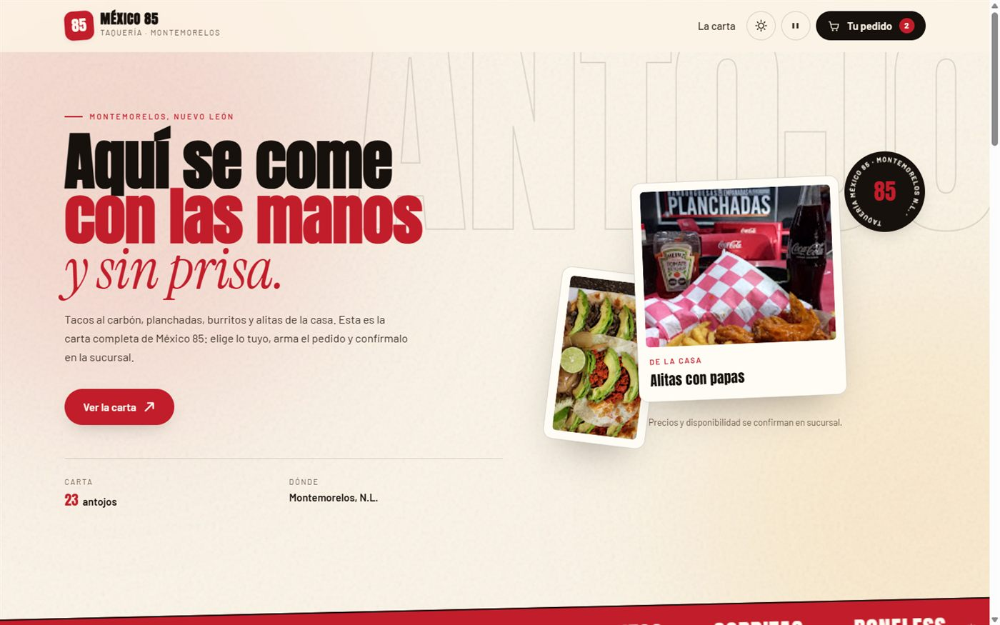
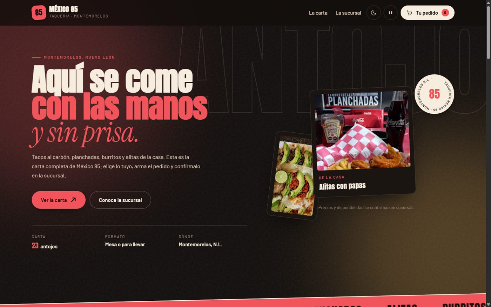
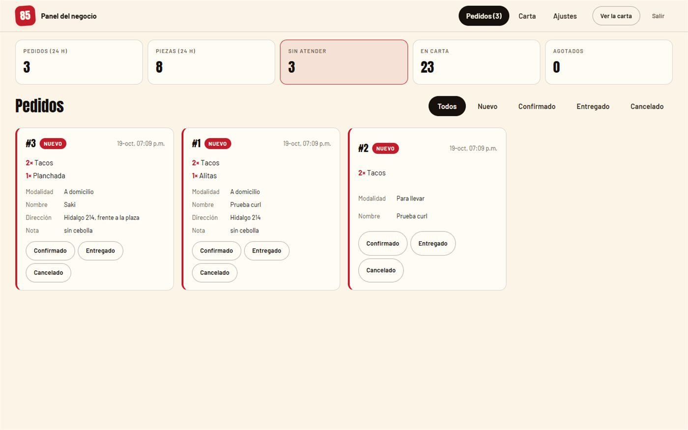
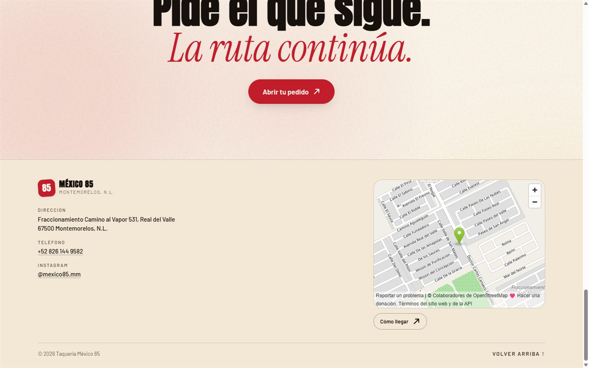
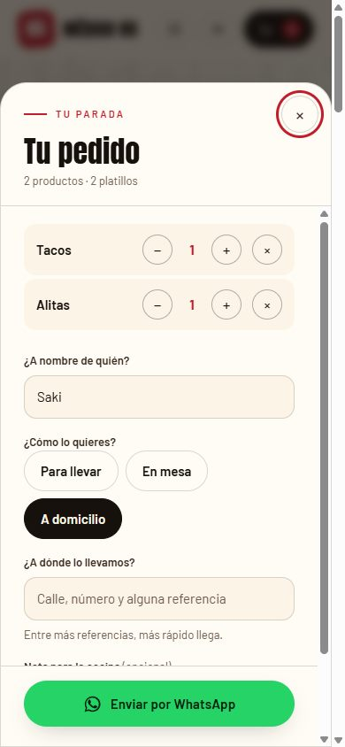
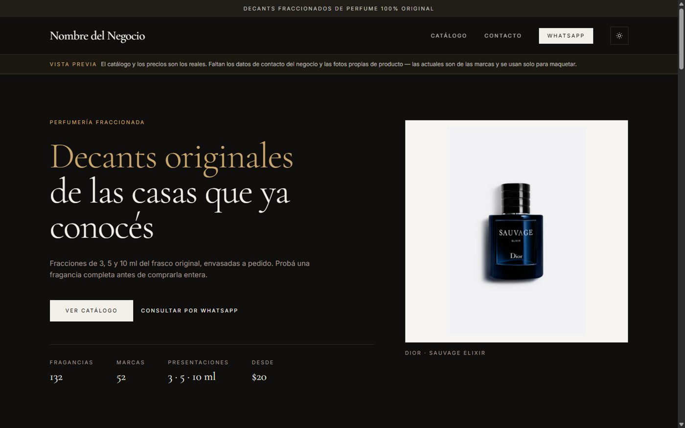
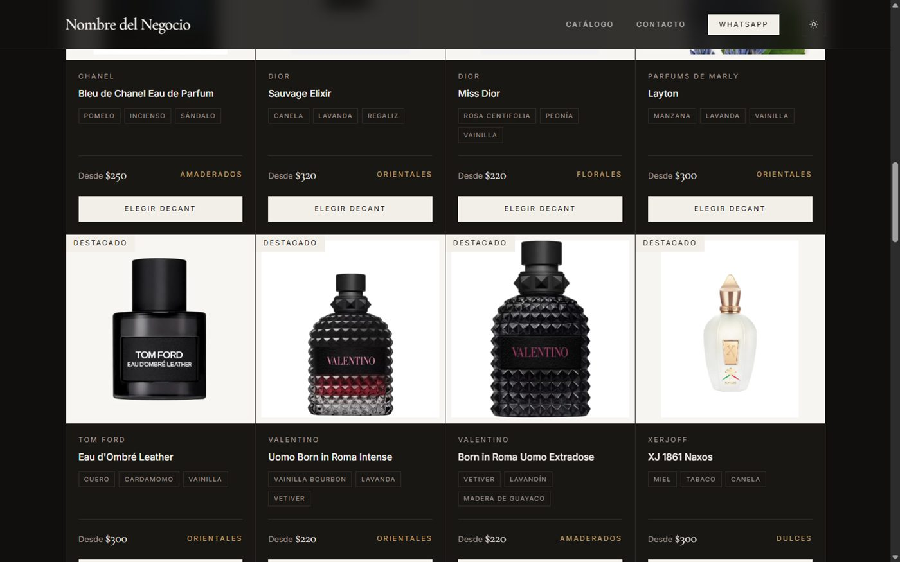
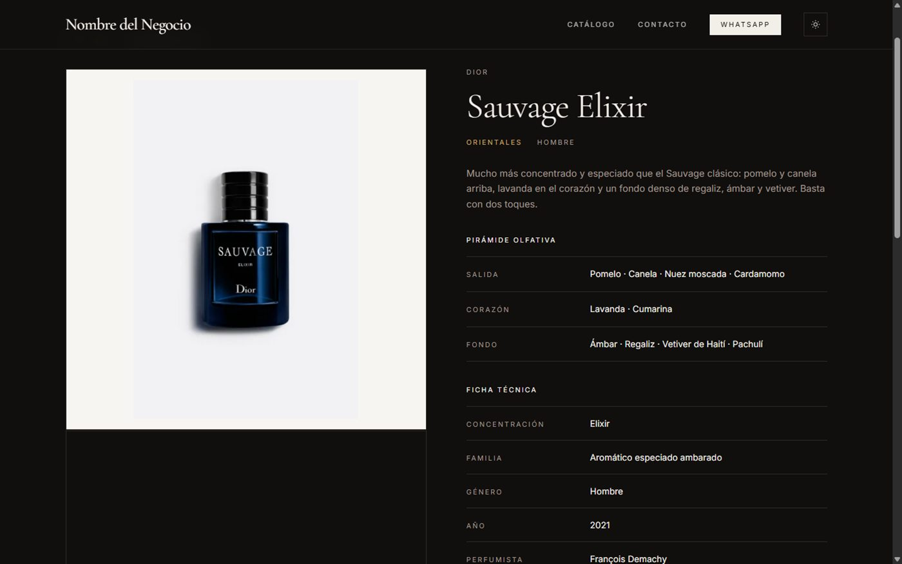
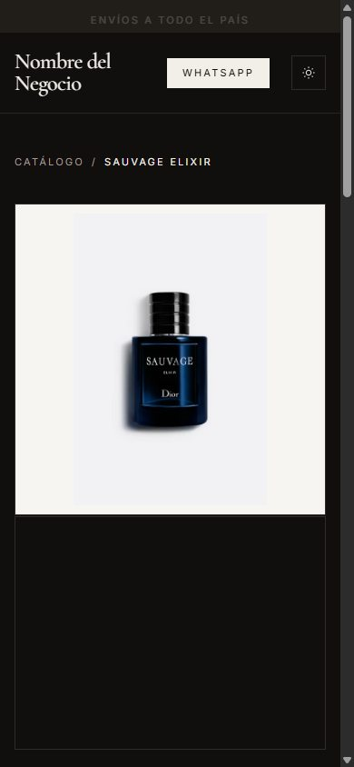

<title>Sergio Masao Herrera Hueda</title>
<meta name="description" content="Portafolio profesional de ingeniería: tres sistemas reales documentados con diagramas, stack y métricas medidas.">
<link rel="preconnect" href="https://fonts.googleapis.com">
<link rel="preconnect" href="https://fonts.gstatic.com" crossorigin>
<link rel="stylesheet" href="https://fonts.googleapis.com/css2?family=Archivo:wght@500;600;700&family=IBM+Plex+Mono:wght@400;500&family=Source+Serif+4:ital,opsz,wght@0,8..60,400;0,8..60,600;1,8..60,400&display=swap">

<style>
:root{
  --ground:#E8EBEA; --surface:#F3F5F4;
  --ink:#131C1B; --ink-2:#394645; --muted:#63726E;
  --line:#C3CCCA; --line-2:#A5B1AE;
  --accent:#0B6B66; --wash:rgba(11,107,102,.075);
  --ok:#2F6B42; --warn:#8A5A12;
  --f-display:"Archivo","Helvetica Neue",Arial,sans-serif;
  --f-body:"Source Serif 4",Georgia,"Times New Roman",serif;
  --f-mono:"IBM Plex Mono",ui-monospace,SFMono-Regular,Menlo,Consolas,monospace;
  --measure:66ch; --page:1140px; --pad:clamp(20px,5vw,56px);
}
@media (prefers-color-scheme:dark){
  :root:not([data-theme="light"]){
    --ground:#0C1312; --surface:#131C1B;
    --ink:#E4EBE9; --ink-2:#BDC9C6; --muted:#8A9A96;
    --line:#273433; --line-2:#3B4A48;
    --accent:#46C9BF; --wash:rgba(70,201,191,.10);
    --ok:#6FC58A; --warn:#D9AE5F;
  }
}
:root[data-theme="dark"]{
  --ground:#0C1312; --surface:#131C1B;
  --ink:#E4EBE9; --ink-2:#BDC9C6; --muted:#8A9A96;
  --line:#273433; --line-2:#3B4A48;
  --accent:#46C9BF; --wash:rgba(70,201,191,.10);
  --ok:#6FC58A; --warn:#D9AE5F;
}

*{box-sizing:border-box}
body{
  margin:0; background:var(--ground); color:var(--ink);
  font-family:var(--f-body); font-size:17px; line-height:1.65;
  -webkit-font-smoothing:antialiased;
}
.wrap{max-width:var(--page); margin:0 auto; padding-inline:var(--pad)}
h1,h2,h3{font-family:var(--f-display); text-wrap:balance; margin:0; line-height:1.12; letter-spacing:-.018em}
p{margin:0}
em{font-style:italic}
code,.mono{font-family:var(--f-mono); font-variant-numeric:tabular-nums}
code{font-size:.92em}
a{color:var(--accent); text-decoration:none; border-bottom:1px solid color-mix(in srgb,var(--accent) 35%,transparent)}
a:hover{border-bottom-color:var(--accent)}
a:focus-visible{outline:2px solid var(--accent); outline-offset:3px}
img{max-width:100%; display:block; height:auto}

.eyebrow{
  font-family:var(--f-mono); font-size:11.5px; font-weight:500;
  letter-spacing:.16em; text-transform:uppercase; color:var(--muted);
}

.frame{
  --c:var(--line-2); --s:14px; --t:1.5px; padding:12px;
  background:
    linear-gradient(var(--c) 0 0) 0 0/var(--s) var(--t) no-repeat,
    linear-gradient(var(--c) 0 0) 0 0/var(--t) var(--s) no-repeat,
    linear-gradient(var(--c) 0 0) 100% 0/var(--s) var(--t) no-repeat,
    linear-gradient(var(--c) 0 0) 100% 0/var(--t) var(--s) no-repeat,
    linear-gradient(var(--c) 0 0) 0 100%/var(--s) var(--t) no-repeat,
    linear-gradient(var(--c) 0 0) 0 100%/var(--t) var(--s) no-repeat,
    linear-gradient(var(--c) 0 0) 100% 100%/var(--s) var(--t) no-repeat,
    linear-gradient(var(--c) 0 0) 100% 100%/var(--t) var(--s) no-repeat;
}

.topbar{
  position:sticky; top:0; z-index:20;
  background:color-mix(in srgb,var(--ground) 92%,transparent);
  backdrop-filter:blur(8px); border-bottom:1px solid var(--line);
}
.topbar .wrap{display:flex; align-items:center; justify-content:space-between; gap:16px; height:56px}
.topbar strong{font-family:var(--f-display); font-size:14px; letter-spacing:.01em}
.topnav{display:flex; gap:22px}
.topnav a{font-family:var(--f-mono); font-size:12px; letter-spacing:.06em; color:var(--ink-2); border:0; text-transform:uppercase}
.topnav a:hover{color:var(--accent)}
@media(max-width:700px){.topnav{display:none}}

.hero{padding:clamp(56px,9vw,104px) 0 clamp(36px,5vw,56px)}
.hero h1{font-size:clamp(38px,6.6vw,70px); font-weight:700; margin-bottom:14px}
.hero .role{
  font-family:var(--f-mono); font-size:clamp(12px,1.5vw,14px); letter-spacing:.1em;
  text-transform:uppercase; color:var(--accent); margin-bottom:28px; line-height:1.7;
}
.hero .lede{font-size:clamp(18px,2.2vw,21px); max-width:var(--measure); color:var(--ink-2)}
.contact{display:flex; flex-wrap:wrap; gap:10px 26px; margin-top:30px; font-family:var(--f-mono); font-size:13.5px}
.contact span{color:var(--muted)}

.stats{
  display:grid; grid-template-columns:repeat(auto-fit,minmax(150px,1fr));
  border-top:1px solid var(--line); margin-top:44px;
}
.stat{padding:20px 20px 20px 0; border-right:1px solid var(--line)}
.stat:last-child{border-right:0}
.stat b{display:block; font-family:var(--f-display); font-size:30px; font-weight:600; font-variant-numeric:tabular-nums; letter-spacing:-.02em}
.stat span{display:block; font-family:var(--f-mono); font-size:11px; letter-spacing:.1em; text-transform:uppercase; color:var(--muted); margin-top:6px}
@media(max-width:620px){.stat{border-right:0; border-bottom:1px solid var(--line); padding-right:0}}

section{padding-block:clamp(44px,6vw,76px); border-top:1px solid var(--line)}
.sec-head{display:flex; align-items:baseline; gap:16px; margin-bottom:28px; flex-wrap:wrap}
.sec-head h2{font-size:clamp(23px,3vw,30px); font-weight:600}
.prose{max-width:var(--measure)}
.prose p + p{margin-top:1em}

.proj{border-top:1px solid var(--line); padding-top:34px; margin-top:52px}
.proj:first-of-type{border-top:0; margin-top:0; padding-top:0}
.proj-title{font-size:clamp(25px,3.4vw,36px); font-weight:700; margin-bottom:10px}
.proj-sub{font-family:var(--f-mono); font-size:13px; color:var(--muted); letter-spacing:.03em; margin-bottom:26px; line-height:1.7}
.proj-sub b{color:var(--accent); font-weight:500}

.block{margin-top:32px}
.block > .eyebrow{display:block; padding-bottom:7px; border-bottom:1px solid var(--line); margin-bottom:16px}

.ficha{display:grid; grid-template-columns:minmax(130px,170px) 1fr; gap:0; font-size:15.5px; margin:0}
.ficha dt{
  font-family:var(--f-mono); font-size:11.5px; letter-spacing:.1em; text-transform:uppercase;
  color:var(--muted); padding:11px 16px 11px 0; border-top:1px solid var(--line);
}
.ficha dd{margin:0; padding:11px 0; border-top:1px solid var(--line); color:var(--ink-2)}
.ficha dt:first-of-type,.ficha dd:first-of-type{border-top:0}
@media(max-width:560px){
  .ficha{grid-template-columns:1fr}
  .ficha dt{padding-bottom:0}
  .ficha dd{padding-top:4px; border-top:0}
}

.chips{display:flex; flex-wrap:wrap; gap:7px}
.chip{
  font-family:var(--f-mono); font-size:12px; padding:4px 9px;
  border:1px solid var(--line-2); color:var(--ink-2); background:var(--surface);
}

.res{list-style:none; margin:0; padding:0; display:grid; gap:14px; max-width:var(--measure)}
.res li{padding-left:26px; position:relative}
.res li::before{
  content:""; position:absolute; left:0; top:.62em; width:11px; height:11px;
  border-left:1.5px solid var(--accent); border-bottom:1.5px solid var(--accent);
}
.res b{font-family:var(--f-mono); font-weight:500; font-size:.95em; font-variant-numeric:tabular-nums; color:var(--ink)}

.figs{display:grid; gap:22px; grid-template-columns:repeat(auto-fit,minmax(290px,1fr))}
figure{margin:0}
figure img{border:1px solid var(--line)}
figcaption{font-family:var(--f-mono); font-size:11.5px; line-height:1.55; color:var(--muted); margin-top:10px; letter-spacing:.02em}
.diagram{overflow-x:auto; background:var(--surface); border:1px solid var(--line); padding:16px}
.diagram svg{min-width:700px; width:100%; height:auto; display:block}

.tblwrap{overflow-x:auto}
.tbl{width:100%; border-collapse:collapse; font-size:15px; min-width:600px}
.tbl th,.tbl td{text-align:left; padding:10px 16px 10px 0; border-bottom:1px solid var(--line); vertical-align:top}
.tbl th{font-family:var(--f-mono); font-size:11px; letter-spacing:.1em; text-transform:uppercase; color:var(--muted); font-weight:500}
.tbl td.n{font-family:var(--f-mono); font-variant-numeric:tabular-nums; white-space:nowrap}

.estado{display:inline-flex; align-items:baseline; gap:8px; font-family:var(--f-mono); font-size:12.5px; line-height:1.6}
.dot{width:7px; height:7px; background:currentColor; border-radius:50%; flex:none; transform:translateY(-1px)}
.e-vivo{color:var(--ok)} .e-pend{color:var(--warn)}

.nota{
  font-family:var(--f-mono); font-size:12.5px; line-height:1.65; color:var(--muted);
  border-left:2px solid var(--line-2); padding-left:14px; margin-top:20px; max-width:64ch;
}

footer{border-top:1px solid var(--line); padding-block:40px; color:var(--muted); font-family:var(--f-mono); font-size:12.5px}
footer .wrap{display:flex; justify-content:space-between; gap:18px; flex-wrap:wrap}
</style>

<header class="topbar">
  <div class="wrap">
    <strong>Sergio Masao Herrera Hueda</strong>
    <nav class="topnav">
      <a href="#perfil">Perfil</a>
      <a href="#proyectos">Proyectos</a>
      <a href="#stack">Competencias</a>
      <a href="#contacto">Contacto</a>
    </nav>
  </div>
</header>

<main>

<div class="wrap">
  <div class="hero">
    <p class="eyebrow" style="margin-bottom:18px">Portafolio profesional &middot; Universidad de Montemorelos</p>
    <h1>Sergio Masao<br>Herrera Hueda</h1>
    <p class="role">Ingeniería en Sistemas &middot; Visión por computadora, datos y sistemas desplegables</p>
    <p class="lede">
      Construyo sistemas completos y los dejo funcionando: del algoritmo de visión que recorta un
      documento al contenedor que lo sirve en la red de una oficina. Las tres piezas de este portafolio
      son software que alguien usa —o va a usar— para trabajar, no ejercicios de clase.
    </p>
    <div class="contact">
      <span>Montemorelos, N.L., México</span>
      <a href="mailto:sergiohmhh133@gmail.com">sergiohmhh133@gmail.com</a>
      <a href="https://www.linkedin.com/in/masao-hueda-108b583b4" target="_blank" rel="noopener">LinkedIn</a>
    </div>

    <div class="stats">
      <div class="stat"><b>3</b><span>Sistemas documentados</span></div>
      <div class="stat"><b>94.1&thinsp;%</b><span>Confianza OCR alcanzada</span></div>
      <div class="stat"><b>132</b><span>Productos catalogados</span></div>
      <div class="stat"><b>17</b><span>Idiomas implementados</span></div>
      <div class="stat"><b>16</b><span>Hallazgos de seguridad atendidos</span></div>
    </div>
  </div>
</div>

<section id="perfil">
  <div class="wrap">
    <div class="sec-head"><p class="eyebrow">01</p><h2>Perfil profesional</h2></div>
    <div class="prose">
      <p>
        Estudiante de Ingeniería en Sistemas orientado a <em>machine learning</em>, ciencia de datos y
        realidad aumentada aplicada a entornos industriales. Combino desarrollo frontend en React con
        bases matemáticas y análisis de datos, y sigo una ruta activa de autoestudio hacia visión por
        computadora y sistemas AR/VR, con miras a especializarme a nivel de posgrado.
      </p>
      <p>
        La forma de trabajar que muestran los tres proyectos es la misma: decidir contra evidencia y no
        contra intuición. El preprocesamiento de imagen «a ciegas» se descartó porque, medido contra seis
        documentos reales, <em>empeoraba</em> el reconocimiento. El generador de códigos QR se verificó
        módulo por módulo contra una implementación independiente antes de confiar en él. Y cuando algo no
        se puede hacer —cifrar una dirección web en el cliente, por ejemplo— queda escrito por qué, en vez
        de simularlo.
      </p>
    </div>

    <div class="block">
      <p class="eyebrow">Experiencia</p>
      <dl class="ficha">
        <dt>Institución</dt><dd><strong>Geoscience Research Institute</strong></dd>
        <dt>Periodo</dt><dd class="mono">Agosto 2025 — actualidad</dd>
        <dt>Funciones</dt><dd>
          Desarrollé, actualicé y di mantenimiento al sitio web institucional, mejorando estructura,
          contenido y funcionamiento. Brindé soporte técnico en programas y eventos en vivo, operando
          equipos de cómputo y gestionando transmisiones digitales. Administré y mantuve la base de datos
          institucional, garantizando integridad, organización y disponibilidad de la información.
        </dd>
        <dt>Formación</dt><dd>
          Ingeniería en Sistemas, Universidad de Montemorelos (agosto 2022 — mayo 2027). Formación
          complementaria en curso: SAP BTP, Python y SQL.
        </dd>
      </dl>
    </div>
  </div>
</section>

<section id="proyectos">
  <div class="wrap">
    <div class="sec-head"><p class="eyebrow">02</p><h2>Proyectos</h2></div>

    <article class="proj">
      <h3 class="proj-title">ScanDigit</h3>
      <p class="proj-sub">Sistema de digitalización y reconocimiento de texto para oficina &middot; <b>Desarrollador único — arquitectura, servidor, cuatro interfaces, despliegue y seguridad</b> &middot; Agosto 2026 — actualidad</p>

      <div class="block">
        <p class="eyebrow">Contexto y problema</p>
        <div class="prose">
          <p>
            Una oficina recibía documentos en papel y fotos sueltas de celular. No existía forma de
            buscarlos: encontrar un expediente significaba revisar carpetas a mano. El encargo fue cerrar
            el ciclo completo —subir o fotografiar un documento, extraer su texto, detectar duplicados y
            hojas en blanco, clasificarlo y consultarlo desde cualquier computadora— con dos restricciones
            que condicionaron todo el diseño: <strong>no se instala nada en los equipos del personal</strong>
            y <strong>los documentos no salen de la red de la oficina</strong>.
          </p>
          <p>
            Una tercera restricción vino del uso real: el operador escanea decenas de hojas seguidas.
            Cualquier ajuste manual —recortar esquinas, corregir el encuadre— volvía el sistema inviable,
            así que el recorte tenía que resolverse solo.
          </p>
        </div>
      </div>

      <div class="block">
        <p class="eyebrow">Herramientas y tecnologías</p>
        <dl class="ficha">
          <dt>Servidor</dt><dd><div class="chips"><span class="chip">Python</span><span class="chip">FastAPI</span><span class="chip">SQLAlchemy</span><span class="chip">SQLite</span><span class="chip">JWT</span><span class="chip">WebSockets</span></div></dd>
          <dt>Visión y OCR</dt><dd><div class="chips"><span class="chip">PaddleOCR</span><span class="chip">OpenCV.js</span><span class="chip">Umbral de Otsu</span><span class="chip">Canny</span><span class="chip">Varianza del Laplaciano</span><span class="chip">Suavizado EMA</span><span class="chip">Pillow</span></div></dd>
          <dt>Interfaz</dt><dd><div class="chips"><span class="chip">React 18</span><span class="chip">Vite</span><span class="chip">Monorepo con workspaces</span><span class="chip">Anime.js</span><span class="chip">PWA</span></div></dd>
          <dt>Infraestructura</dt><dd><div class="chips"><span class="chip">Docker</span><span class="chip">docker compose</span><span class="chip">gosu</span><span class="chip">TLS autofirmado</span><span class="chip">Reglas de firewall</span></div></dd>
          <dt>Seguridad</dt><dd><div class="chips"><span class="chip">Cifrado en reposo (Fernet)</span><span class="chip">Cookies httpOnly</span><span class="chip">Control por roles</span><span class="chip">Bitácora de auditoría</span><span class="chip">Limitación de tasa</span></div></dd>
          <dt>Estado</dt><dd><span class="estado e-vivo"><i class="dot"></i>En uso, desplegado en contenedor sobre la red de la oficina</span></dd>
        </dl>
      </div>

      <div class="block">
        <p class="eyebrow">Evidencia técnica — topología de despliegue</p>
        <div class="diagram">
          <svg viewBox="0 0 880 430" role="img" aria-label="Diagrama de red del despliegue de ScanDigit dentro de la red local de la oficina, sin puertos publicados hacia internet.">
            <defs>
              <marker id="ar" markerWidth="8" markerHeight="8" refX="7" refY="4" orient="auto">
                <path d="M0,0 L8,4 L0,8 z" fill="var(--line-2)"/>
              </marker>
              <marker id="ara" markerWidth="8" markerHeight="8" refX="7" refY="4" orient="auto">
                <path d="M0,0 L8,4 L0,8 z" fill="var(--accent)"/>
              </marker>
            </defs>
            <style>
              .bx{fill:var(--ground); stroke:var(--line-2); stroke-width:1.2}
              .bxa{fill:var(--wash); stroke:var(--accent); stroke-width:1.2}
              .lb{font-family:var(--f-mono); font-size:11px; fill:var(--ink)}
              .sm{font-family:var(--f-mono); font-size:9.5px; fill:var(--muted)}
              .ac{font-family:var(--f-mono); font-size:9.5px; fill:var(--accent)}
              .tt{font-family:var(--f-mono); font-size:9.5px; fill:var(--muted); letter-spacing:.14em}
              .ln{stroke:var(--line-2); stroke-width:1.2; fill:none}
              .la{stroke:var(--accent); stroke-width:1.2; fill:none}
            </style>

            <rect class="bx" x="24" y="12" width="140" height="34"/>
            <text class="lb" x="94" y="34" text-anchor="middle">Internet</text>
            <path class="ln" d="M94,46 L94,84" stroke-dasharray="5 4"/>
            <path d="M85,56 L103,74 M103,56 L85,74" stroke="var(--warn)" stroke-width="1.8" fill="none"/>
            <text class="sm" x="116" y="69">sin puertos publicados</text>

            <rect x="24" y="84" width="832" height="286" fill="none" stroke="var(--line-2)" stroke-width="1.2" stroke-dasharray="6 5"/>
            <text class="tt" x="40" y="104">RED LOCAL DE LA OFICINA</text>

            <rect class="bxa" x="48" y="118" width="264" height="146"/>
            <text class="lb" x="64" y="140">PC de oficina &middot; Docker</text>
            <rect class="bx" x="64" y="152" width="232" height="30"/>
            <text class="sm" x="76" y="171">FastAPI :8000 &middot; sin privilegios</text>
            <rect class="bx" x="64" y="190" width="110" height="28"/>
            <text class="sm" x="76" y="208">SQLite</text>
            <rect class="bx" x="186" y="190" width="110" height="28"/>
            <text class="sm" x="198" y="208">storage cifrado</text>
            <text class="ac" x="64" y="236">Fernet en reposo</text>
            <text class="sm" x="64" y="252">firewall: :8000 acotado a la subred</text>

            <rect class="bxa" x="366" y="118" width="214" height="146"/>
            <text class="lb" x="382" y="140">Servidores de interfaz</text>
            <rect class="bx" x="382" y="152" width="90" height="26"/><text class="sm" x="392" y="169">Landing :5175</text>
            <rect class="bx" x="480" y="152" width="84" height="26"/><text class="sm" x="490" y="169">Panel :5174</text>
            <rect class="bx" x="382" y="186" width="90" height="26"/><text class="sm" x="392" y="203">Escáner :5173</text>
            <rect class="bx" x="480" y="186" width="84" height="26"/><text class="sm" x="490" y="203">Móvil :5176</text>
            <text class="ac" x="382" y="232">proxy /api → :8000</text>
            <text class="sm" x="382" y="248">cookie httpOnly = sesión única</text>

            <rect class="bx" x="636" y="118" width="196" height="62"/>
            <text class="lb" x="652" y="142">Equipos del personal</text>
            <text class="sm" x="652" y="162">navegador, sin instalar nada</text>

            <rect class="bx" x="636" y="202" width="196" height="76"/>
            <text class="lb" x="652" y="226">Celular del operador</text>
            <text class="sm" x="652" y="246">PWA, entra por código QR</text>
            <text class="sm" x="652" y="262">IP real de LAN detectada sola</text>

            <path class="la" d="M366,196 L312,196" marker-end="url(#ara)"/>
            <path class="ln" d="M636,150 L580,166" marker-end="url(#ar)"/>
            <path class="ln" d="M636,240 L580,214" marker-end="url(#ar)"/>
            <path class="la" d="M473,264 L473,296 L734,296 L734,278" marker-end="url(#ara)" stroke-dasharray="4 4"/>

            <text class="ac" x="48" y="324">ws://ws/captura autenticado — el panel se refresca solo al llegar un documento</text>
            <text class="sm" x="48" y="342">el escáner usa sondeo cada 10 s: su credencial de estación no lleva cookie</text>
            <text class="tt" x="48" y="400">NINGÚN ENDPOINT ACEPTA ACCESO ANÓNIMO &middot; LOS ARCHIVOS NUNCA SE SIRVEN COMO ESTÁTICOS</text>
          </svg>
        </div>
        <p class="nota">
          El diagrama recoge dos decisiones que costaron trabajo. La sesión viaja en una cookie
          <code>httpOnly</code> y no en almacenamiento local: las cookies se delimitan por host y no por
          puerto, así que un solo inicio de sesión sirve para las cuatro aplicaciones. Y HSTS quedó fuera
          a propósito, porque el navegador lo memoriza por nombre de host sin distinguir puerto, y
          activarlo habría forzado HTTPS en todos los proyectos locales de esa máquina durante semanas.
        </p>
      </div>

      <div class="block">
        <p class="eyebrow">Evidencia técnica — flujo de captura y reconocimiento</p>
        <div class="diagram">
          <svg viewBox="0 0 880 280" role="img" aria-label="Diagrama del flujo de captura, desde el fotograma de la cámara hasta el documento cifrado y consultable.">
            <defs>
              <marker id="a2" markerWidth="8" markerHeight="8" refX="7" refY="4" orient="auto">
                <path d="M0,0 L8,4 L0,8 z" fill="var(--line-2)"/>
              </marker>
            </defs>
            <style>
              .s{fill:var(--ground); stroke:var(--line-2); stroke-width:1.2}
              .sa{fill:var(--wash); stroke:var(--accent); stroke-width:1.2}
              .t{font-family:var(--f-mono); font-size:10.5px; fill:var(--ink)}
              .ts{font-family:var(--f-mono); font-size:9px; fill:var(--muted)}
              .fl{stroke:var(--line-2); stroke-width:1.2; fill:none}
            </style>

            <rect class="s" x="16" y="40" width="116" height="56"/>
            <text class="t" x="30" y="64">Fotograma</text><text class="ts" x="30" y="82">cámara en vivo</text>

            <rect class="s" x="154" y="40" width="130" height="56"/>
            <text class="t" x="168" y="62">Descarte por</text><text class="t" x="168" y="76">borrosidad</text>
            <text class="ts" x="168" y="91">varianza Laplaciano</text>

            <rect class="s" x="306" y="40" width="140" height="56"/>
            <text class="t" x="320" y="62">Otsu y contorno</text><text class="t" x="320" y="76">de mayor área</text>
            <text class="ts" x="320" y="91">esquinas por cuadrante</text>

            <rect class="sa" x="468" y="40" width="152" height="56"/>
            <text class="t" x="482" y="62">Filtro de brillo</text>
            <text class="ts" x="482" y="78">papel 190–210, mesa 25–78</text>
            <text class="ts" x="482" y="91">umbral = 140</text>

            <rect class="s" x="642" y="40" width="130" height="56"/>
            <text class="t" x="656" y="64">Suavizado EMA</text>
            <text class="ts" x="656" y="82">rechaza atípicos</text>

            <path class="fl" d="M132,68 L154,68" marker-end="url(#a2)"/>
            <path class="fl" d="M284,68 L306,68" marker-end="url(#a2)"/>
            <path class="fl" d="M446,68 L468,68" marker-end="url(#a2)"/>
            <path class="fl" d="M620,68 L642,68" marker-end="url(#a2)"/>
            <path class="fl" d="M707,96 L707,128 L90,128 L90,166" marker-end="url(#a2)"/>

            <rect class="s" x="16" y="166" width="150" height="58"/>
            <text class="t" x="30" y="188">Corrección de</text><text class="t" x="30" y="202">perspectiva</text>
            <text class="ts" x="30" y="217">recorte tras enderezar</text>

            <rect class="sa" x="188" y="166" width="146" height="58"/>
            <text class="t" x="202" y="188">PaddleOCR</text>
            <text class="ts" x="202" y="204">corre en hilo aparte,</text>
            <text class="ts" x="202" y="217">no bloquea el servidor</text>

            <rect class="s" x="356" y="166" width="162" height="58"/>
            <text class="t" x="370" y="188">Confianza del texto</text>
            <text class="ts" x="370" y="204">umbral de revisión = 60.0</text>
            <text class="ts" x="370" y="217">marca los dudosos</text>

            <rect class="s" x="540" y="166" width="146" height="58"/>
            <text class="t" x="554" y="188">Clasificación</text>
            <text class="ts" x="554" y="204">duplicados y hojas</text>
            <text class="ts" x="554" y="217">en blanco</text>

            <rect class="sa" x="708" y="166" width="156" height="58"/>
            <text class="t" x="722" y="188">Cifrado y guardado</text>
            <text class="ts" x="722" y="204">Fernet y SQLite,</text>
            <text class="ts" x="722" y="217">consultable y auditado</text>

            <path class="fl" d="M166,195 L188,195" marker-end="url(#a2)"/>
            <path class="fl" d="M334,195 L356,195" marker-end="url(#a2)"/>
            <path class="fl" d="M518,195 L540,195" marker-end="url(#a2)"/>
            <path class="fl" d="M686,195 L708,195" marker-end="url(#a2)"/>
          </svg>
        </div>
        <p class="nota">
          El bloque resaltado del filtro de brillo es el que resolvió el problema real: el área del contorno
          por sí sola empataba el documento con la mesa de madera. Midiendo el brillo medio —papel entre 190
          y 210, mesa entre 25 y 78— los dos casos que fallaban quedaron resueltos sin pedirle al operador
          ni un clic extra.
        </p>
      </div>

      <div class="block">
        <p class="eyebrow">Resultados e impacto</p>
        <div class="tblwrap">
          <table class="tbl">
            <thead><tr><th>Indicador</th><th>Antes</th><th>Después</th><th>Cómo se midió</th></tr></thead>
            <tbody>
              <tr><td>Confianza promedio de reconocimiento</td><td class="n">61.6&thinsp;%</td><td class="n">94.1&thinsp;%</td><td>Mismos documentos reales de la oficina, al sustituir EasyOCR por PaddleOCR</td></tr>
              <tr><td>Hallazgos críticos de seguridad abiertos</td><td class="n">4</td><td class="n">0</td><td>Auditoría externa de 16 hallazgos; los 4 de prioridad máxima cerrados y verificados</td></tr>
              <tr><td>Documentos migrados a cifrado en reposo</td><td class="n">0</td><td class="n">28</td><td>Migración de documentos reales, sin pérdidas</td></tr>
              <tr><td>Idiomas disponibles en la interfaz</td><td class="n">1</td><td class="n">17</td><td>487 claves por idioma en las cuatro aplicaciones, con diccionario propio</td></tr>
              <tr><td>Pruebas del servidor antes de desplegar</td><td class="n">—</td><td class="n">29/29</td><td>Contenedor aislado contra una copia de los datos reales</td></tr>
            </tbody>
          </table>
        </div>
        <ul class="res" style="margin-top:28px">
          <li><b>Los cuatro hallazgos críticos</b> eran de libro: no había autenticación, los documentos quedaban expuestos como archivos estáticos, el identificador de usuario podía falsificarse desde el cliente y el control de origen estaba abierto. Se atacaron primero, cambiando el orden del plan original, que los dejaba para el final.</li>
          <li><b>El preprocesamiento «obvio» se descartó con datos.</b> Enderezar, quitar ruido y ecualizar antes del reconocimiento es el consejo estándar; probado contra seis documentos reales, <em>empeoró</em> el resultado. Quedó documentado para no repetirlo a ciegas.</li>
          <li><b>El cifrado protege lo que puede, y el límite está escrito:</b> defiende contra copiar la carpeta de documentos sin la llave, no contra alguien con acceso al servidor en marcha. El proceso no arranca sin la llave, sin valor por omisión silencioso.</li>
          <li><b>La reconciliación al arrancar encontró dos archivos huérfanos</b> preexistentes, sin registro en la base. Por política nunca borra sola: los reporta y la decisión queda en manos de una persona.</li>
        </ul>
      </div>
    </article>

    <article class="proj">
      <h3 class="proj-title">Taquería México 85</h3>
      <p class="proj-sub">Carta digital y pedidos por código QR &middot; <b>Desarrollador y diseñador — cliente real, Montemorelos, N.L.</b> &middot; Octubre 2026</p>

      <div class="block">
        <p class="eyebrow">Contexto y problema</p>
        <div class="prose">
          <p>
            El local quería que quien escanea el código QR de la mesa viera la carta completa, armara su
            pedido y lo enviara por WhatsApp. El requisito que define el proyecto apareció al visitar el
            lugar: <strong>adentro muchos celulares no tienen señal</strong>. Una carta que dependiera de la
            red simplemente no se vería en el momento en que hace falta.
          </p>
          <p>
            Segunda condición del negocio: sin precios en pantalla. El total lo confirma el local al
            responder el mensaje, porque las porciones y la disponibilidad cambian.
          </p>
        </div>
      </div>

      <div class="block">
        <p class="eyebrow">Herramientas y tecnologías</p>
        <dl class="ficha">
          <dt>Interfaz</dt><dd><div class="chips"><span class="chip">React 18</span><span class="chip">Vite</span><span class="chip">PWA</span><span class="chip">Service Worker</span><span class="chip">Tema claro y oscuro</span></div></dd>
          <dt>Servidor</dt><dd><div class="chips"><span class="chip">FastAPI</span><span class="chip">SQLAlchemy</span><span class="chip">Supabase (Postgres)</span><span class="chip">Seguridad por fila</span><span class="chip">Despliegue sin servidor</span></div></dd>
          <dt>Sin dependencias</dt><dd><div class="chips"><span class="chip">Generador de QR propio</span><span class="chip">OpenStreetMap</span><span class="chip">Tipografías autoalojadas</span></div></dd>
          <dt>Estado</dt><dd><span class="estado e-pend"><i class="dot"></i>Funcionando de punta a punta en local; falta conectar la base del cliente y publicar</span></dd>
        </dl>
      </div>

      <div class="block">
        <p class="eyebrow">Evidencia visual</p>
        <div class="figs">
          <figure>
            <div class="frame"></div>
            <figcaption>Portada. La carta son 23 platillos en cuatro grupos; el contador del pedido vive en el encabezado y persiste en el dispositivo.</figcaption>
          </figure>
          <figure>
            <div class="frame"></div>
            <figcaption>Tema oscuro. El movimiento se controla con un botón de pausa visible, no sólo con la preferencia del sistema.</figcaption>
          </figure>
          <figure>
            <div class="frame"></div>
            <figcaption>Panel de administración: los pedidos entran en tarjetas con su estado y sus contadores. El acceso a ajustes está oculto a propósito —se abre con <code>?ajustes</code>— y desde ahí se genera el código QR de la mesa.</figcaption>
          </figure>
          <figure>
            <div class="frame"></div>
            <figcaption>Mapa de OpenStreetMap incrustado, sin llave de interfaz ni cuenta. Las coordenadas se verificaron contra el polígono que el propio mapa etiqueta para la colonia.</figcaption>
          </figure>
        </div>
        <figure style="margin-top:22px; max-width:280px">
          <div class="frame"></div>
          <figcaption>La hoja del pedido en celular, que es el escenario real: alguien escaneando el código en la mesa. Un solo botón para enviar; el carrito persiste en el dispositivo.</figcaption>
        </figure>
      </div>

      <div class="block">
        <p class="eyebrow">Resultados e impacto</p>
        <ul class="res">
          <li><b>Funciona sin señal.</b> Service worker más tipografías descargadas al proyecto —subconjunto latino, unos 128 KB—. Con tipografías servidas desde internet, un celular sin datos entrando por primera vez perdía todos los títulos.</li>
          <li><b>Generador de códigos QR escrito a mano</b> (modo byte, nivel M, versiones 1 a 10), sin librerías, para no depender de internet. <b>Verificado contra una implementación independiente: matriz idéntica en las versiones 2, 5, 7 y 8.</b> La única diferencia es la máscara, y la nuestra elige la de menor penalización, que es lo que manda el estándar.</li>
          <li><b>Dos errores encontrados por las pruebas antes de desplegar:</b> Postgres rechaza cualquier valor explícito en columnas de identidad generada, y un esquema no se puede validar directo del modelo cuando uno de sus campos vive en la relación y no en la tabla.</li>
          <li><b>12 pruebas que corren contra SQLite sin levantar Postgres</b>, usando tipos genéricos que se comportan igual en ambos motores. La suite entera corre en segundos y en cualquier máquina.</li>
          <li><b>Lo que no se podía hacer quedó escrito, no simulado.</b> El pedido tiene que viajar en la dirección web porque así funciona el enlace de WhatsApp, y cifrarlo en el cliente es inútil: la llave viajaría con el código. Se resolvió abriendo la aplicación directamente —esquema propio en Android, enlace universal en iPhone— para que la dirección no quede a la vista en el escenario real.</li>
          <li><b>Tres piezas quedaron reutilizables</b> fuera del proyecto: la paleta de dos temas, el componente de carta con puntos guía y el generador de QR sin dependencias.</li>
        </ul>
      </div>
    </article>

    <article class="proj">
      <h3 class="proj-title">Catálogo de decants</h3>
      <p class="proj-sub">Catálogo digital y panel de gestión para perfumería fraccionada &middot; <b>Desarrollador full-stack y diseño de producto — cliente real</b> &middot; Septiembre 2026 — actualidad</p>

      <div class="block">
        <p class="eyebrow">Contexto y problema</p>
        <div class="prose">
          <p>
            El cliente vende <em>decants</em>: fracciones de 3, 5 y 10 ml envasadas a pedido desde frascos
            originales. Manejaba 132 fragancias repartidas entre una hoja de cálculo con los precios y
            carpetas sueltas de fotos y fichas. No tenía forma de mostrarle el inventario a un cliente, ni
            de cambiar un precio o un stock sin pedirle a alguien que editara código.
          </p>
          <p>
            La restricción interesante fue la de operación: el dueño y su empleado cargan stock desde el
            celular, a veces sin señal. El sistema tenía que aceptar cambios sin conexión y sincronizarlos
            después <em>sin que dos dispositivos se pisaran un ajuste</em>.
          </p>
        </div>
      </div>

      <div class="block">
        <p class="eyebrow">Herramientas y tecnologías</p>
        <dl class="ficha">
          <dt>Sitio</dt><dd><div class="chips"><span class="chip">Next.js</span><span class="chip">Exportación estática</span><span class="chip">TypeScript</span><span class="chip">React</span><span class="chip">PWA instalable</span></div></dd>
          <dt>Datos y acceso</dt><dd><div class="chips"><span class="chip">Firestore</span><span class="chip">Firebase Storage</span><span class="chip">Acceso por enlace de correo</span><span class="chip">Cloud Functions</span><span class="chip">Reglas por rol</span></div></dd>
          <dt>Verificación</dt><dd><div class="chips"><span class="chip">Comprobación de tipos</span><span class="chip">Análisis estático</span><span class="chip">Compilación completa</span><span class="chip">Migración con ensayo en seco</span></div></dd>
          <dt>Estado</dt><dd><span class="estado e-pend"><i class="dot"></i>Construido y verificado; pendiente dar de alta el proyecto en la nube del cliente</span></dd>
        </dl>
      </div>

      <div class="block">
        <p class="eyebrow">Evidencia visual</p>
        <div class="figs">
          <figure>
            <div class="frame"></div>
            <figcaption>Portada. Dirección visual formal y editorial —negro tinta, oro de acento, versalitas— definida a partir del análisis de tres tiendas del rubro.</figcaption>
          </figure>
          <figure>
            <div class="frame"></div>
            <figcaption>Catálogo real: 132 fragancias de 52 marcas, con filtro por familia olfativa, búsqueda por nota y orden. Cada tarjeta muestra tres notas y el precio de entrada.</figcaption>
          </figure>
          <figure>
            <div class="frame"></div>
            <figcaption>Ficha individual con pirámide olfativa completa —salida, corazón y fondo— y selector de presentación. Son 147 páginas estáticas generadas en la compilación.</figcaption>
          </figure>
          <figure style="max-width:280px">
            <div class="frame"></div>
            <figcaption>Vista de celular. El sitio es instalable como aplicación.</figcaption>
          </figure>
        </div>
      </div>

      <div class="block">
        <p class="eyebrow">Resultados e impacto</p>
        <ul class="res">
          <li><b>132 fragancias de 52 marcas</b> consolidadas desde 132 fichas sueltas cruzadas contra la hoja de precios por número de fila. <b>147 páginas estáticas</b> generadas y verificadas con comprobación de tipos, análisis estático y compilación completa: todo limpio.</li>
          <li><b>El stock se modela como libro de movimientos, no como número final.</b> Es la decisión que hace posible trabajar sin conexión: dos dispositivos que registran «salieron 3» y «salieron 2» suman cinco al sincronizar, mientras que dos que escriben un total se pisan y uno de los ajustes se pierde.</li>
          <li><b>El control de acceso vive en las reglas del servidor</b> —Dueño ve todo, Empleado sólo stock y pedidos—, no en ocultar botones en la interfaz, que es apariencia de seguridad y no seguridad.</li>
          <li><b>La plataforma se eligió por una razón concreta, no por costumbre:</b> el compromiso con el cliente ya incluía panel sin conexión con sincronización automática, y Firestore trae persistencia local y reintentos de fábrica. Construir eso a mano sobre otro servidor era trabajo sin ganancia.</li>
          <li><b>Dos piezas quedaron reutilizables:</b> la cola de subida sin conexión con IndexedDB y el patrón de alta de usuarios por invitación con función de bloqueo.</li>
        </ul>
        <p class="nota">
          Las fotografías que se ven son de las marcas y están puestas para maquetar; se reemplazan por
          fotos del stock real antes de publicar, y los datos de contacto del negocio todavía son de
          muestra. El catálogo y los precios, en cambio, son los reales.
        </p>
      </div>
    </article>

  </div>
</section>

<section id="stack">
  <div class="wrap">
    <div class="sec-head"><p class="eyebrow">03</p><h2>Competencias técnicas</h2></div>
    <dl class="ficha" style="max-width:920px">
      <dt>Lenguajes</dt><dd><div class="chips"><span class="chip">Python</span><span class="chip">JavaScript</span><span class="chip">TypeScript</span><span class="chip">SQL</span><span class="chip">HTML y CSS</span></div></dd>
      <dt>Interfaz</dt><dd><div class="chips"><span class="chip">React 18</span><span class="chip">Next.js</span><span class="chip">Vite</span><span class="chip">PWA y service workers</span><span class="chip">Monorepos</span><span class="chip">Accesibilidad y temas</span></div></dd>
      <dt>Servidor</dt><dd><div class="chips"><span class="chip">FastAPI</span><span class="chip">SQLAlchemy</span><span class="chip">Postgres</span><span class="chip">SQLite</span><span class="chip">Firestore</span><span class="chip">WebSockets</span><span class="chip">Diseño de API</span></div></dd>
      <dt>Visión y datos</dt><dd><div class="chips"><span class="chip">OpenCV</span><span class="chip">PaddleOCR</span><span class="chip">Procesamiento de imagen</span><span class="chip">Regresión y probabilidad</span><span class="chip">Análisis de datos</span></div></dd>
      <dt>Infraestructura</dt><dd><div class="chips"><span class="chip">Docker</span><span class="chip">Despliegue sin servidor</span><span class="chip">Redes locales y QR</span><span class="chip">TLS</span><span class="chip">Reglas de firewall</span><span class="chip">git</span></div></dd>
      <dt>Seguridad</dt><dd><div class="chips"><span class="chip">Autenticación y sesiones</span><span class="chip">Control por roles</span><span class="chip">Cifrado en reposo</span><span class="chip">Bitácora de auditoría</span><span class="chip">Respuesta a auditorías</span></div></dd>
      <dt>Idiomas</dt><dd>Español nativo &middot; Inglés &middot; Japonés</dd>
    </dl>
  </div>
</section>

<section id="contacto">
  <div class="wrap">
    <div class="sec-head"><p class="eyebrow">04</p><h2>Contacto</h2></div>
    <div class="prose">
      <p>
        Busco incorporarme a un equipo donde el trabajo toque visión por computadora, datos o sistemas que
        haya que dejar funcionando de verdad. Si algo de lo que está aquí arriba se parece a lo que
        necesitan resolver, escríbeme.
      </p>
    </div>
    <div class="contact" style="margin-top:26px">
      <a href="mailto:sergiohmhh133@gmail.com">sergiohmhh133@gmail.com</a>
      <a href="https://www.linkedin.com/in/masao-hueda-108b583b4" target="_blank" rel="noopener">linkedin.com/in/masao-hueda</a>
      <span>Montemorelos, Nuevo León, México</span>
    </div>
  </div>
</section>

</main>

<footer>
  <div class="wrap">
    <span>Sergio Masao Herrera Hueda &middot; Universidad de Montemorelos</span>
    <span>Portafolio profesional &middot; 2026</span>
  </div>
</footer>
